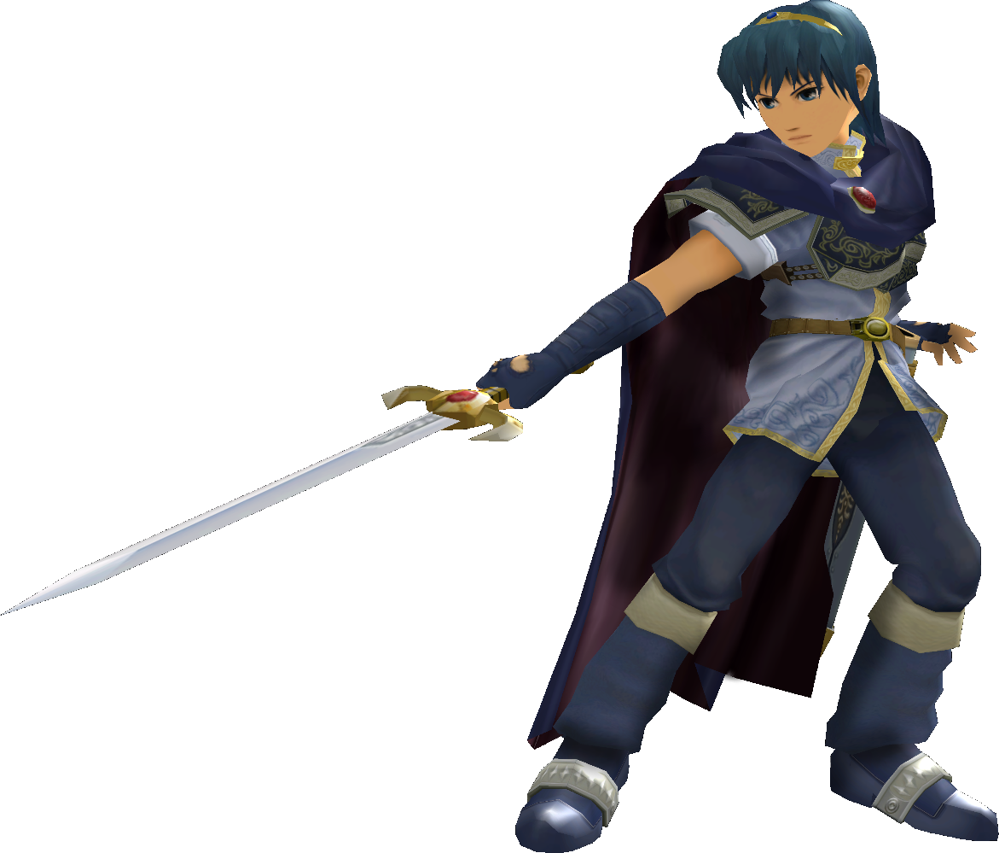

|  | Ranked 3rd of tier list : MARTH |
| Weight | |
|---|---|
| 16th heaviest (16-19th in PAL) | |
| Shield stats | |
| Roll lenght | 2nd longest |
| Shield size | 16th biggest |
| Grab range | 4th longest |
| Wavedash lenght | th longest |
| Movement stats | |
| Walking speed | 2nd fastest |
| Turning speed | 1st fastest |
| Running speed | 5th fastest |
| Aerial stats | |
| Jump squat | 5 frames (8th fastest) |
| Short hop | 10th highest |
| Aerial speed | 13th fastest |
| First jump height | 5th highest |
| Seconde jump height | 9th lowest |
| Total jump height | 15th highest |
| Average fall speed | 8-10th fastest |
| Fast falling speed | 6th fastest |
| Falling speed | 6th fastest |
| Ledge stats | |
| 0-99% ledge roll | 12th longest |
| 100%+ ledge roll | 11th longest |
| 0-99% ledge attack range | 15th farthest |
| 100%+ ledge attack range | 3rd farthest |
| Intangible ledgedash (Optimal) | 4 frames |
| Notable players | |
| PPMD, Mew2King, Ken, Azen, PewepewU, The Moon | |
| Smashboard forum | |
| http://smashboards.com/forums/marth.69/ | |
Marth currently ranks 4rd place on the tier list, in the S tier. This is due to fast overall startup in his attacks hit at the tip of his blade, very potent juggling and combo ability with one of the larges non disjointed grab ranges, and a great edgeguarding ability. Marth is also blessed with a multitide of good movmeent options to appraoch and presusre with. He has a long dash dance and a long wavedash, both of which compliment his large reach. Marth also has many option to KO enemies and close combos, sucj as his down aerial (a very potent spike when sweetspotted, and the closer to the notorious Ken Combo) and forward smash. Compared to other top tier characters, Marth's learning curve is not vert high as he does not require an extensive amoun of tech skill to be used effectively, making him easy to pick up and play. On the downside, his ability to punish approaches are somewhat limited in comparison to other top tier characters due to the lack of a projectile and the short duration of his moves.
Marth also suffers from a general lack of options when put on the defensive. His weight makes him very easy to combo and does not provide sufficient knockback restistance to survive heavy hits at kill percent. Marth's out sof shield game is also notoriously poor. His recovery is also problematic ; while it is extendable with his side special and can end with a fast up special that covers decent distance, it is also rather predictable. Marth's main weakness though is that despite the fast startup of his moves, his moves have considerable endlag and are thus very whiff punishable. As such Marth is very susceptible to momentum shifts ; a punished move puts Marth in a defensive position where he has little options. So overall, despite is low technical learning curve, many consider Marth to be one of the most difficult characters to play at high levels due to intricate spacing ability required of the top-level players to overcome his aforementioned flaws, Marth has excellent matchups against many characters uncluding six that are nearly unloseable.